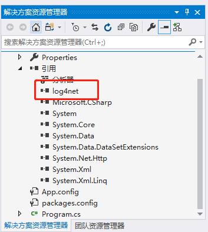
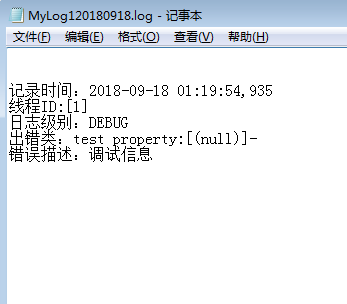
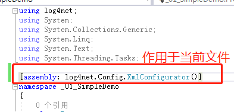
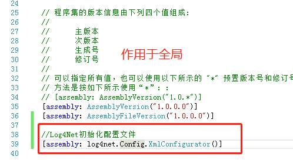
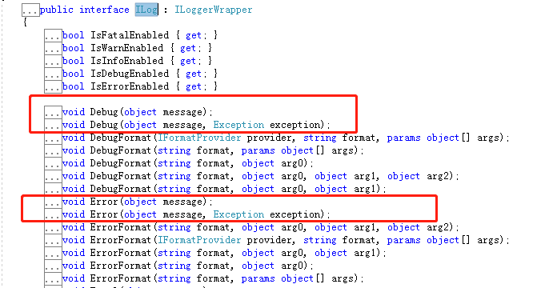
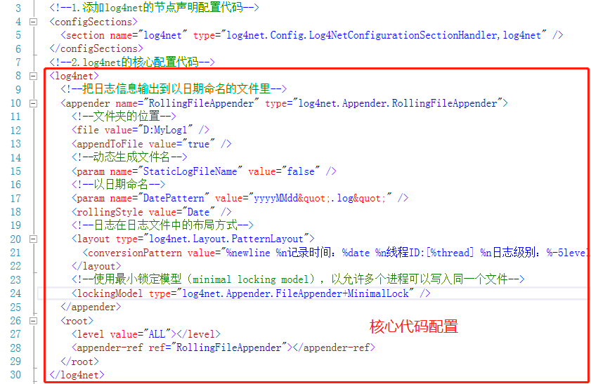
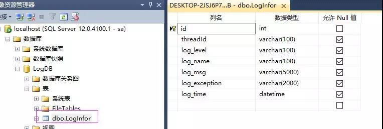
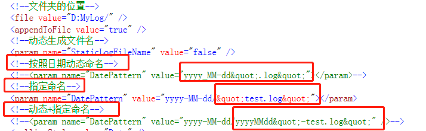
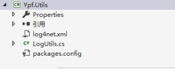
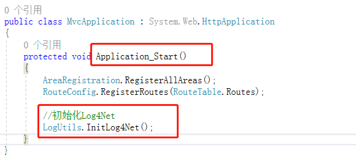

Log4Net介绍
今天在公众号推送上看到了关于.NET开源日志框架Log4Net的一篇文章，恰巧现在做的项目中也有使用到Log4Net。由于本人对其的使用不是很熟练，于是想花点时间学习一下这个框架，了解其中的原理。
在一个大型的项目中，日志文件扮演着十分重要的角色。当系统足够大，代码量很多的时候，我们很难逐行去检查代码，找出错误。这时可以用查看日志的方式替代调试代码。通过查看日志文件，我们可以检查错误，检测程序运行的过程。
话不多说，开撸。
Log4Net简介
Log4Net是从Java中的Log4j迁移过来的一个.NET版的开源日志框架，它的功能很强大，可以将日志分为不同的等级，以不同的格式输出到不同的存储介质中。
比如：数据库、txt文件、内存缓存区、邮件、控制台、ANSI终端、远程接收端等等。
最常用的两种存储介质是：txt文件和数据库。
Log4Net日志的五个级别
- FATAL（致命错误）
- ERROR（一般错误）
- WARN（警告）
- INFO（一般信息）
- DEBUG（调试信息）
注意：级别依次递减，每个级别都对应着一组重载方法进行调用。
基本使用步骤
我们先以控制台程序为例，简单介绍Log4Net存储日志到txt文本文档中，后面再做代码的详解。
新建01-SimpleDemo控制台程序，通过指令【Install-Package log4net】安装相应程序集。

在默认配置文件App.config（B/S程序则为web.config）中进行配置，主要分两块：
A.在<configuration></configuration> 节点下新增节点下新增（要在其最顶部）：
<configSections>
<section name="log4net" type="log4net.Config.Log4NetConfigurationSectionHandler,log4net" />
</configSections>B.在<configuration></configuration>根节点下，配置log4net的核心配置代码，主要节点如下：
<log4net><appender></appender><root></root></log4net>
详细代码如下：
<?xml version="1.0" encoding="utf-8" ?>
<configuration>
<!--1.添加log4net的节点声明配置代码-->
<configSections>
<section name="log4net" type="log4net.Config.Log4NetConfigurationSectionHandler,log4net" />
</configSections>
<!--2.log4net的核心配置代码-->
<log4net>
<!--把日志信息输出到以日期命名的文件里-->
<appender name="RollingFileAppender" type="log4net.Appender.RollingFileAppender">
<!--文件夹的位置-->
<file value="D:MyLog1" />
<appendToFile value="true" />
<!--动态生成文件名-->
<param name="StaticLogFileName" value="false" />
<!--以日期命名-->
<param name="DatePattern" value="yyyyMMdd".log"" />
<rollingStyle value="Date" />
<!--日志在日志文件中的布局方式-->
<layout type="log4net.Layout.PatternLayout">
<conversionPattern value="%newline %n记录时间：%date %n线程ID:[%thread] %n日志级别：%-5level %n出错类：%logger property:[%property{NDC}]-%n错误描述：%message%newline %n" />
</layout>
<!--使用最小锁定模型（minimal locking model），以允许多个进程可以写入同一个文件-->
<lockingModel type="log4net.Appender.FileAppender+MinimalLock" />
</appender>
<root>
<level value="ALL"></level>
<appender-ref ref="RollingFileAppender"></appender-ref>
</root>
</log4net>
<startup>
<supportedRuntime version="v4.0" sku=".NETFramework,Version=v4.6.1" />
</startup>
</configuration>代码调用
static void Main(string[] args)
{
log4net.Config.XmlConfigurator.Configure();
ILog log = LogManager.GetLogger("test");
log.Debug("调试信息");
}运行结果
查看D盘目录，发现文件MyLog120180918.log。打开文件，日志保存成功。

初始化配置文件
两种初始化配置的形式
- 通过代码来初始化配置，log4net.Config.XmlConfigurator.Configure();
- 通过反射形式进行初始化配置，[assembly: log4net.Config.XmlConfigurator()]
注意：[assembly: log4net.Config.XmlConfigurator()] 可以加在当前使用文件的namespace上作用于当前文件。

或者加在Properties/AssemblyInfo.cs中，则该项目全局都无须再初始化了。

在实际项目中，默认的配置文件里可能包含很多框架的信息，这个时候把log4net的配置代码再放入进去，就会显得有点杂乱，因此一般通过log4net.Config.XmlConfigurator.Configure(); 来关联配置文件。
情况一：使用默认配置文件的情况
- 代码配置：log4net.Config.XmlConfigurator.Configure();
- 反射配置：[assembly: log4net.Config.XmlConfigurator()]
情况二：修改默认配置文件的名称为App1.config
这里只是举例，很少有修改默认配置文件名称的情况。
代码配置：首先App1.config文件的属性中的“生成操作”改为“嵌入的资源”，然后通过以下代码进行配置。
Assembly assembly = Assembly.GetExecutingAssembly();
var xml = assembly.GetManifestResourceStream("_01_SimpleDemo.App1.config");
log4net.Config.XmlConfigurator.Configure(xml);注意：代码中的“_01_SimpleDemo”为命名空间。
反射配置：[assembly: log4net.Config.XmlConfigurator(ConfigFile = “_01_SimpleDemo.App1.config”)]
注意：用这种方式属性中的：复制到输出目录需要改为：始终复制，生成操作不需要配置，使用默认：无 即可。
情况三：新建单独xml文件，进行log4net的配置
推荐采用这种方式，和原配置文件区分开，单独配置方便，处理方式和情况二是一致的。
代码配置：首先将log4net.xml文件的属性中的“生成操作”改为“嵌入的资源”，然后通过以下代码进行配置。
Assembly assembly = Assembly.GetExecutingAssembly();
var xml = assembly.GetManifestResourceStream("_01_SimpleDemo.log4net.xml");
log4net.Config.XmlConfigurator.Configure(xml);注意：代码中的“_01_SimpleDemo”为命名空间。
反射配置：[assembly: log4net.Config.XmlConfigurator(ConfigFile = “log4net.xml”)]。
注意：用这种方式属性中的：复制到输出目录需要改为：始终复制，生成操作不需要配置，使用默认：无 即可。
情况四：通过绝对路径的方式进行处理
无论是修改默认配置文件的名称，或者新建单独的xml作为配置文件，都可以通过绝对路径的方式进行处理（不推荐）。
直接写绝对路径（注意这种方式【不需要】配置文件属性为“嵌入的资源”）。
log4net.Config.XmlConfigurator.Configure(new FileInfo(@"C:\Users\Administrator\source\repos\01-SimpleDemo\01-SimpleDemo\log4net.xml"));
通过代码获取绝对路径（注意这种方式【不需要】配置文件属性为“嵌入的资源”，但需要改为“始终复制”，确保输出到bin文件下）。
string assemblyFilePath = Assembly.GetExecutingAssembly().Location;
string assemblyDirPath = Path.GetDirectoryName(assemblyFilePath);
string configFilePath = assemblyDirPath + " //log4net.xml";
log4net.Config.XmlConfigurator.Configure(new FileInfo(configFilePath));注意：B/S程序下通过 log4net.Config.XmlConfigurator.Configure(new FileInfo(Server.MapPath(“~”) + @”/log4net.xml”));来配置。
代码调用详解
Log4Net允许多个ILog对象同时存在，通过代码：ILog log = LogManager.GetLogger(“xxx”);来创建。
日志级别由高到低分别为：FATAL（致命错误）> ERROR（一般错误）> WARN（警告）> INFO（一般信息）> DEBUG（调试信息）> ，另外还有OFF和ALL。
- OFF表示所有信息都不写入，ALL表示所有信息都写入
- 可以通过这样的xml配置，表示WARN级别以及高于WARN以上的级别才会被写入日志
<root> |
- 写入日志的方法有：Debug、Error、Fatal、Info、Warn五个方法，每个方法都有两个重载

- 在使用配置文件为log4net.xml的情况下的调用代码
//代码配置 |
配置文件详解
Log4Net的配置文件主要分为两大部分：分别是【自定义配置节点】和【核心代码配置】。
自定义配置节点代码固定
<configSections> |
核心代码配置位于log4net节点中，里面包括appender节点和root节点，appender节点配置日志输出路径，root节点用于设置记录日志的级别和启用哪些输出途径。

几点说明
自定义节点<section name=”log4net” type=”log4net.Config.Log4NetConfigurationSectionHandler,log4net” />代码固定，直接复制即可。
<root></root>节点主要用来：配置日志的输出级别和加载日志的输出途径。
A：level中的value值表示该值及其以上的日志级别才会输出，日志级别包括：OFF > FATAL（致命错误） > ERROR（一般错误） > WARN（警告） > INFO（一般信息） > （调试信息） > ALL，比如，<level value=”INFO”></level>表示只有INFO及其以上的日志级别才会被保存。（OFF表示所有信息都不写入，ALL表示所有信息都写入）
B：<appender-ref></appender-ref>标签用于加载日志的输出途径代码，通过ref和appender标签中的name属性相关联，比如，<appender-ref ref=”RollingFileAppender”></appender-ref>表示开启txt文档保存日志的方式。
<appender></appender>节点，用来配置日志的输出途径的。一般输出到【txt文本文档】和【数据库】。
A：需要注意字段类型相匹配，并且要显式指定其长度。

B：关于txt文本文档的命名，可以存放到一个文件夹里，也可以按照时间来区分文件夹，并且命名可以 动态+指定命名的方式。

注意：文件夹位置“D:MyLog/”后面的斜杠表示文件夹。
C：关于日志文件的大小的说明和文件个数的说明，主要需要三个节点配合使用（实际开发中，如果一个txt特别大，打开的时候会非常的慢，卡帧，所以该步骤有必要配置一下）。
首先，配置RollingStyle节点为Size模式或者Composite模式，然后配置maximumFileSize节点设置每个文件的大小，最后配置MaxSizeRollBackups节点，设置日志文件的个数。超出大小后在所有文件名后自动增加正整数重新命名，数字最大的最早写入。
<param name="RollingStyle" value="Composite" />
<param name="maximumFileSize" value="10KB" />
<param name="MaxSizeRollBackups" value="5" />
详细代码
<?xml version="1.0" encoding="utf-8" ?> |
简单的封装及完整代码
这里模拟在系统框架中队Log4Net进行简单的封装，然后在MVC框架中调用。
步骤一
新建Ypf.Utils类库，作为工具类库，引入log4net程序集，并将前面用到的log4net.xml复制进来，改属性为嵌入资源，然后新建LogUtils类（不要起名为LogHelp），对log4net的方法进行简单的封装，主要包括：初始化代码、ILog实例创建、五级日志级别的封装。

LogUtils类代码如下
using log4net; |
步骤二
新建Ypf.MVC的MVC5框架，添加对Ypf.Utils类库的引用，在Global.asax全局文件中添加对Log4Net的初始化。

然后就可以愉快的进行调用测试了。
/// <summary> |